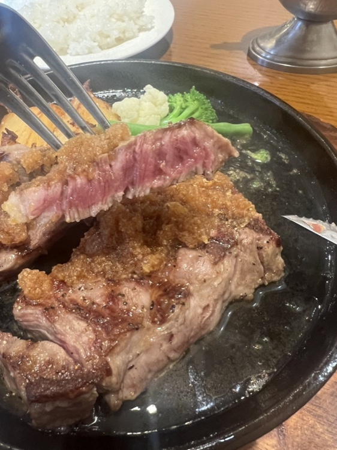
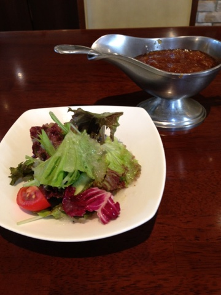
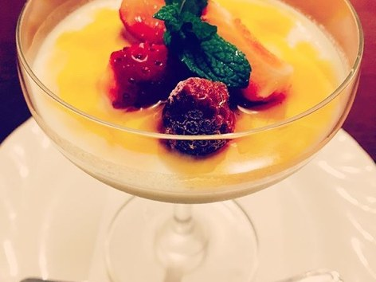
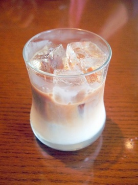

米沢牛と特選和牛の専門店でございます。
お値段は店内のお品書きに掲げております。お電話でもお答えいたします。
お値段は店内のお品書きに掲げております。お電話でもお答えいたします。
ランチ
L U N C Hランチには全て サラダ・ライス・お味噌汁 が付きます。ライスの大盛りも承っております。ランチタイムは11時30分から、ラストオーダーは13時20分、14時までのご案内でございます。
- ヒレステーキ150gランチ
- ヒレステーキ200gランチ
- 上州牛ロースステーキ180gランチ
- 上州牛ロースステーキ250gランチ
- Denハンバーグステーキランチ和牛100％（群馬牛入）
- 和牛ステーキ＆ハンバーグランチ
- ランチドリンクお食事をご注文のお客様に。コーヒー・紅茶・アイスコーヒー・アイスティー・アイスカフェオレ・津軽りんごジュース（果汁100％）
ランチ限定 おすすめ
L U N C H S P E C I A Lサラダ・ライス・味噌汁付きでございます。こちらはサービス価格でのご提供のため、クレジットカードはご利用いただけません。
- 黒毛和牛サーロインステーキ150g山形県産 他
- 黒毛和牛サーロインステーキ200g山形県産 他
- 黒毛和牛ヒレステーキ150g山形県産 他
ステーキ
S T E A K焼き加減はお好みでお申し付けください。
- Den特選ヒレステーキ 150g
- Den特選ヒレステーキ 200g
- Den特選ヒレステーキ 250g
- Den特選ロースステーキ 200g
- Den特選ロースステーキ 250g
- Den特選ロースステーキ 300g


特選霜降和牛 米沢牛
Y O N E Z A W A B E E F厳選された最高級ブランド和牛・米沢牛を直接仕入れております。米沢牛の中でも最高級ランク（A5・牝）の品質でございます。ステーキはすべてオーダーカットができます。
- 米沢牛ヒレステーキ 150g
- 米沢牛サーロインステーキ 150g
- 米沢牛サーロインステーキ 200g
- 米沢牛ローススライスレアに焼いて薄くカットしたお肉です。ポン酢でどうぞ
特選霜降り和牛・山形牛
W A G Y Uシェフが選んだ良質の黒毛和牛でございます。
- 山形牛ヒレステーキ 150g
- 山形牛ヒレステーキ 200g
- 山形牛サーロインステーキ 150g
- 山形牛サーロインステーキ 200g
- 山形牛サーロインステーキ 250g
- 黒毛和牛ヒレステーキ 150g
- 黒毛和牛サーロインステーキ 200g
- 黒毛和牛サーロインステーキ 250g

ミックスグリル
M I X G R I L Lお肉の焼き方はミディアム又はウエルダンになります。
- 黒毛和牛ステーキ＆ハンバーグ
- 和牛ステーキ＆手作りソーセージ
ハンバーグ
H A M B U R G和牛100％（米沢牛入）でございます。
- Denハンバーグ（キノコ）180g
- チロリアンハンバーグ（チーズ）
- 和風ハンバーグ（おろしソース）
- ビックハンバーグ（キノコ 又は チーズ）250g
- ミネソタハンバーグ（目玉焼き）
セット
S E T洋セットのお飲みものは、コーヒー・紅茶・アイスカフェオレ・津軽リンゴジュース・オレンジジュース・アイスコーヒー・アイスティーからお選びいただけます。
- 洋セットスープ・サラダ・ライス又はパン・ドリンク
- 和セットご飯・香の物・味噌汁
サラダ・サイドメニュー
S A L A D & S I D E- グリーンサラダ
- トマトサラダ
- フライドポテト
- カマンベールチーズ
- 生ハム
- 手作りソーセージの盛り合わせ
- コーンスープ
- 味噌汁
- ライス
- パン

デザート
D E S S E R T- パンナコッタ
- ブラッドオレンジとミルクのジェラート
- バニラのジェラート

お飲みもの
D R I N K- ビール 中ビン
- 生ビール（中）
- 生ビール（小）
- ノンアルコールビール
- グラスワイン（赤・白）
- ドライシェリー
- キール
- 冷酒（山形・小桜）
- 津軽リンゴジュース果汁100％
- オレンジジュース果汁100％
- コーラ
- ミルク
- ウーロン茶
- ブレンドコーヒー
- アメリカンコーヒー
- 紅茶
- アイスコーヒー
- アイスティー
- アイスカフェオレ
- 今月のおすすめワイン スペイン産 オーガニックワイン フィエスタ
